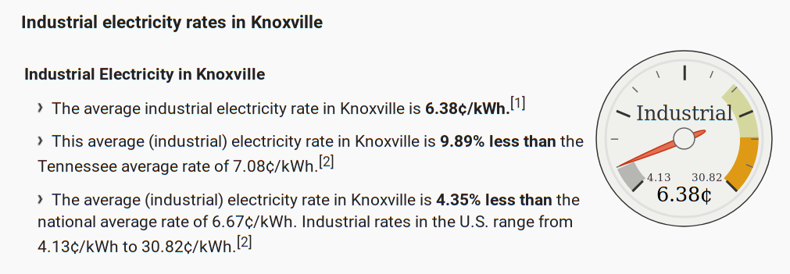

23) Coprocessor architectures#
Last time:
Collective operations
Naive and MST algorithms
Today:
Coprocessor architectures
Energy efficiency
Programming models for GPUs
1. Coprocessor architectures#
Coprocessors are meant to supplement the functions of the primary processor (the CPU).
A single node on the Summit cupercomputer (which held the number 1 position on the TOP500 list from November 2018 to June 2020.):

Usually, when systems use more than one kind of processor or core, or when different nodes on a cluster have a different number or configurations of CPUs and coprocessors (GPUs), we talk about heterogeneous architectures.
Some examples of supercomputers, most of which made the top of the top-500 list (published every year, twice a year: The first of these updates always coincides with the International Supercomputing Conference in June, and the second is presented at the ACM/IEEE Supercomputing Conference in November).
See the top-500 Wiki page for reference:
CUDA devices (NVIDIA)
Programmable via CUDA, OpenACC, OpenMP-6, OpenCL, HIP->CUDA, SYCL->CUDA
Example machine: OLCF Summit
ROCm devices (AMD)
Programmable via HIP, OpenMP-6, OpenCL, SYCL->HIP
Example machines:
OLCF Frontier, the world’s first exascale supercomputer. It was the fastest supercomputer in the world between 2022 and 2024 (superseded by El Capitan). Spec sheet.
LLNL El Capitan (AMD 4th Gen EPYC 24C “Genoa” 24-core 1.8 GHz CPUs and AMD Instinct MI300A GPUs).
Intel X GPUs
Programmable via SYCL, OpenMP-6, OpenCL?
Example machine: ALCF Aurora/A21
Non-coprocessor supercomputers:
Fugaku (Post-K) It became the fastest supercomputer in the world in the June 2020 TOP500 list as well as becoming the first ARM architecture-based computer to achieve this. Fugaku was superseded as the fastest supercomputer in the world by Frontier in May 2022.
Fundamental capabilities#
using CSV
using DataFrames
data = """
package,cores,lanes/core,clock (MHz),peak (GF),bandwidth (GB/s),TDP (W),MSRP
Xeon 8280,28,8,2700,2400,141,205,10000
NVIDIA V100,80,64,1455,7800,900,300,10664
AMD MI60,64,64,1800,7362,1024,300,
AMD Rome,64,4,2000,2048,205,200,6450
"""
# Read the data into a DataFrame
df = CSV.File(IOBuffer(data)) |> DataFrame
# Set the index column to "package"
df.package .= String.(df.package); # Ensure package names are strings
ArgumentError: Package CSV not found in current path.
- Run `import Pkg; Pkg.add("CSV")` to install the CSV package.
Stacktrace:
[1] macro expansion
@ ./loading.jl:1842 [inlined]
[2] macro expansion
@ ./lock.jl:267 [inlined]
[3] __require(into::Module, mod::Symbol)
@ Base ./loading.jl:1823
[4] #invoke_in_world#3
@ ./essentials.jl:926 [inlined]
[5] invoke_in_world
@ ./essentials.jl:923 [inlined]
[6] require(into::Module, mod::Symbol)
@ Base ./loading.jl:1816
df
2. Energy efficiency#
Amdahl’s Law for energy efficiency#
# Compute efficiency (GF/W) and add it as a new column
df[!, :efficiency_GF_per_W] = df."peak (GF)" ./ df."TDP (W)"
println(df[:, [:package, :efficiency_GF_per_W]])
using Plots
default(linewidth=4, legendfontsize=12)
ngpu = 0:8
overhead = 100 # Power supply, DRAM, disk, etc.
# Compute peak performance
peak = (ngpu .== 0) .* df[df.package .== "Xeon 8280", :"peak (GF)"][1] .+ ngpu .* df[df.package .== "NVIDIA V100", :"peak (GF)"][1]
# Compute total power consumption
tdp = overhead .+ df[df.package .== "Xeon 8280", :"TDP (W)"][1] .+ ngpu .* df[df.package .== "NVIDIA V100", :"TDP (W)"][1]
# Plot
plot(ngpu, peak ./ tdp, xlabel="Number of GPUs per CPU", title="Peak efficiency [GF/W]", label = "")
Compare to Green 500 list#
As of November 2024:
#1 system: JEDI (JUPITER Exascale Development Instrument at EuroHPC/FZJ in Germany) is 72.733 GF/W (BullSequana XH3000 machine with an NVIDIA Grace Hopper Superchip 72C)
#2 system: ROMEO HPC Center - Champagne- Ardenne in France is 70.912 GF/W (ROMEO-2025 - BullSequana XH3000, Grace Hopper Superchip 72C 3GHz, NVIDIA GH200 Superchip)
#3 system: Adastra 2 - Grand Equipement National de Calcul Intensif (France) is 69.098 GF/W (HPE Cray EX255a, AMD 4th Gen EPYC 24C 1.8GHz, AMD Instinct MI300A)
Amdahl’s law for cost efficiency#
# Compute cost efficiency (GF per dollar) and add it as a new column
df[!, :cost_GF_per_dollar] = df."peak (GF)" ./ df.MSRP
println(df[:, [:package, :cost_GF_per_dollar]])
overhead = 3000 .+ 2000 * ngpu # power supply, memory, cooling, maintenance
cost = overhead .+ df[df.package .== "Xeon 8280", :"MSRP"][1] .+ ngpu * df[df.package .== "NVIDIA V100", :"MSRP"][1]
plot(ngpu, peak ./ cost, xlabel="number of GPUs per CPU", title="cost efficiency [GF/\$]", label = "")
What fraction of datacenter cost goes to the power bill?#
OLCF Summit is reportedly a $200M machine.
What if we just buy the GPUs at retail?
256 racks
18 nodes per rack
6 GPUs per node
V100 MSRP of about $10k
256 * 18 * 6 * 10e3 / 1e6 # millions
~$276 M
Rule of thumb: \( \lesssim \$1M \) per MW-year
We know Summit is a 13 MW facility
Check industrial electricity rates in Tennessee (piture below from 2019)

.0638 * 24 * 365
Hence, 558.8 * 13 ~ roughly $7 million/year in raw electricity to power
3. Programming models for GPUs#
Directives
Example:
A C snippet annotated with OpenACC directives:
#pragma acc data copy(A) create(Anew)
while ( error > tol && iter < iter_max ) {
error = 0.0;
#pragma acc kernels {
#pragma acc loop independent collapse(2)
for ( int j = 1; j < n-1; j++ ) {
for ( int i = 1; i < m-1; i++ ) {
Anew [j] [i] = 0.25 * ( A [j] [i+1] + A [j] [i-1] +
A [j-1] [i] + A [j+1] [i]);
error = max ( error, fabs (Anew [j] [i] - A [j] [i]));
}
}
}
}
In the above example, we see the use of OpenACC’s data directive that tells the compiler to create code that performs specific data movements and provides hints about data usage.
The directive is acc data. The two clauses used in this example that can be combined with the data directive are:
copycopy, copies data to and from the host and accelerator. When entering the data region, the application allocates accelerator memory and then copies data from the host to the GPU. When exiting the data region, the data from the accelerator is copied back to the host.
createcreate, allocates memory on the accelerator when the accelerated region is entered and deallocates the memory when the accelerated region is exited. No data is copied to or from the host and the accelerator. Because the data is local to the accelerator, you can think of it as temporary.
In C, the beginning and end of the data region is marked with {curly braces}.
#pragma acc data (clause) { ... }
In Fortran, the data region begins with the data directive and has another directive to specify the end of the data region.
!$acc data (clause) .. !$acc end data
After
Ais copied from the host to the accellerator (with thedata copydirective) andAnewis created on the device (with thedata createdirective), the loop then is run on the accelerator by theacc parallel loopdirective. After the loop is finished, the arrayAis copied from the accelerator back to the host courtesy of theacc end datadirective for Fortran or the closing curly brace (for C code).OpenACC allows you to combine directives into a single line, so in the example above we see
acc loop independent collapse(2). When used within a parallel region, theloopdirective asserts that the loop iterations are independent of each other and are safe the parallelize and should be used to provide the compiler as much information about the loops as possible.Finally, the other clause we see in the example is the
acc kernelsclause. Withkernelsthe compiler will determine which loops to parallelize. Thekernelsconstruct identifies a region of code that may contain parallelism, but relies on the automatic parallelization capabilities of the compiler to analyze the region, identify which loops are safe to parallelize, analyze these loops for data independence, and then accelerate those loops.
For more OpenACC directives and levels of parallelism, read this guide.
A more direct approach to GPU programming#
GPUs have been designed to execute many similar commands, or threads, in parallel, achieving higher throughput. Latency is the time between starting an operation and receiving its result, such as 2 ns, while throughput is the rate of completed operations, for example, operations per second.
Resources: